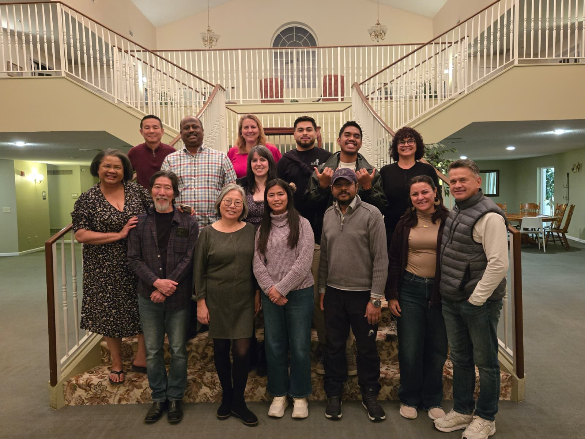

0
interações registradas nos grupos principais em janeiro e fevereiro
Queridos irmãos e parceiros, vocês já estão participando de algo muito bonito: cuidado, intercessão, tradução da Bíblia e ferramentas novas de AI que estão servindo equipes no Brasil, na Índia, no Timor Leste e no Pacífico.
Esta versão curta cobre principalmente janeiro e fevereiro de 2026, com uma nota adicional sobre o trabalho presencial com tradutores em março de 2026, aqui em Kansas City.
Alguns marcos concretos que ajudam a enxergar o que Deus está construindo por meio dessa parceria.
Clique nos blocos para navegar por esta atualização curta. A ideia é que esta carta seja lida como uma pequena experiência, não como um documento formal, com fotos reais do que vivemos nesses meses.
Janeiro começou com muito movimento de equipe, oração e coordenação. Tivemos alinhamentos frequentes entre o OBT - YWAM KC e o SHEMA [OBT Lab], com acompanhamento, intercessão e decisões práticas para sustentar o ministério com saúde e constância.
Em vez de apenas “manter a máquina rodando”, esse tempo ajudou a fortalecer o ambiente espiritual e relacional em que toda a parte técnica acontece. Para nós, isso faz parte da missão tanto quanto a tecnologia em si.
Seguimos orando por saúde, decisões, viagens e necessidades pessoais da equipe.
Janeiro também envolveu conversas sobre formação e caminho de mentores no contexto OBT.
O que foi construído em janeiro preparou o solo para o avanço técnico dos meses seguintes.
Em fevereiro vimos avanços importantes na parte tecnológica do ministério. O protótipo do Bible Mining Maps já trabalha com o livro de Rute estruturado em 4 capítulos, 85 versículos, 463 cláusulas e 460 menções, ajudando a analisar o significado do texto bíblico antes da tradução.
No dia 25 de fevereiro de 2026, também abrimos uma conversa promissora com a equipe de AI da FCBH ao apresentar nossa pesquisa sobre Acoustemes, buscando colaboração futura para servir projetos de tradução oral com ainda mais qualidade e velocidade.
Fevereiro também incluiu um tempo muito especial de formação presencial com uma equipe de 4 tradutores da Índia. Foi uma oportunidade rica de treinamento, troca de experiência e encorajamento mútuo, conectando tecnologia, missão e relacionamento.
O foco não é só acelerar, mas entender o texto com mais clareza antes de traduzir.
Em fevereiro também treinamos uma equipe de 4 tradutores da Índia, unindo formação prática e visão missionária.
Fevereiro fortaleceu pontes entre missão, pesquisa, desenvolvimento aplicado e treinamento presencial.
Neste mês de março de 2026, trabalhamos diretamente aqui em Kansas City com tradutores das línguas Kosrae e Terena, enquanto seguimos finalizando a coleta de dados linguísticos para treinar modelos de AI que poderão acelerar muito a tradução oral.
No caso de Kosrae, os registros que acompanhamos já indicam porções importantes concluídas, incluindo Lucas, Rute e Atos 1-8. Em paralelo, o trabalho com Terena nos lembra que essa tecnologia também está a serviço de línguas indígenas do Brasil, com respeito ao contexto e à realidade local de cada povo.
Kosrae conecta esse esforço a uma ilha do Pacífico que já tem porções concluídas e quer avançar mais.
Terena traz esse mesmo investimento para dentro do contexto de uma língua indígena brasileira.
Esse mês não foi só pesquisa: foi relacionamento direto com tradutores, aqui, face a face.
O Shema Update é um mapa interativo feito por nós para mostrar, de forma bonita e acessível, o progresso das equipes que temos apoiado globalmente. Ali é possível explorar localidades, línguas e número de capítulos traduzidos, além de ter uma visão mais clara do alcance atual do ministério.
Nos dados publicados em 15 de março de 2026, o mapa mostra 126 projetos em 27 países, ligados a 20 organizações, incluindo 50 projetos marcados como ativos e 23 projetos orais. Só no Timor Leste, a base lista 14 idiomas ligados a equipes acompanhadas.
Vocês podem literalmente ver o alcance global do que estão sustentando.
Não é só uma lista: é uma forma viva de explorar países, idiomas, equipes e progresso.
Os dados ajudam a transformar uma visão missionária ampla em algo palpável e mensurável.
Esta galeria reúne algumas fotos reais desses meses. Os botões ao lado trocam a cena principal para mostrar pessoas, tecnologia e momentos que marcaram essa etapa.

Que vocês não estão apenas apoiando um ministério “lá longe”, mas participando ativamente de algo vivo: pessoas sendo cuidadas, equipes sendo fortalecidas e tecnologia sendo desenvolvida para servir a tradução da Palavra de Deus com mais profundidade e mais alcance.
Obrigada por caminharem conosco com generosidade, oração e cuidado fiel. É muito precioso ter irmãos que não apenas enviam recursos, mas realmente entram na história conosco. Esse cuidado alcança o trabalho, as equipes que recebemos e também a nossa família.